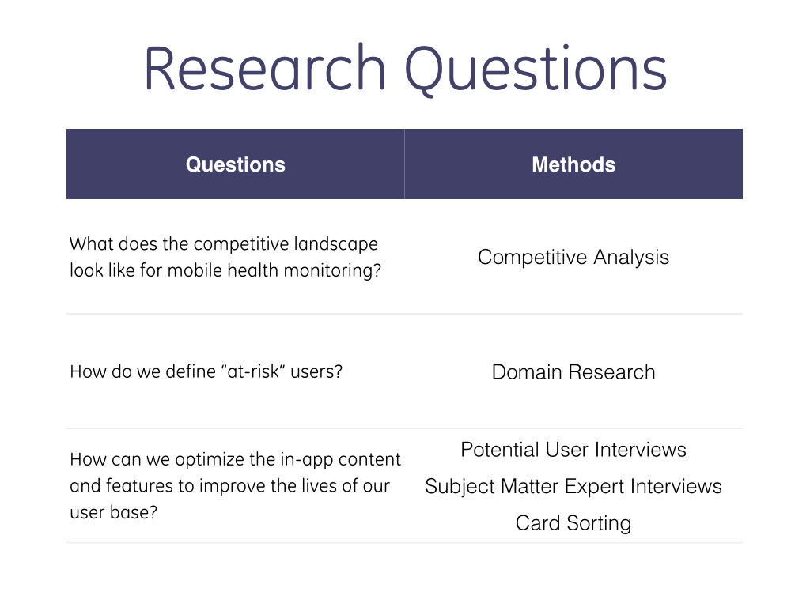
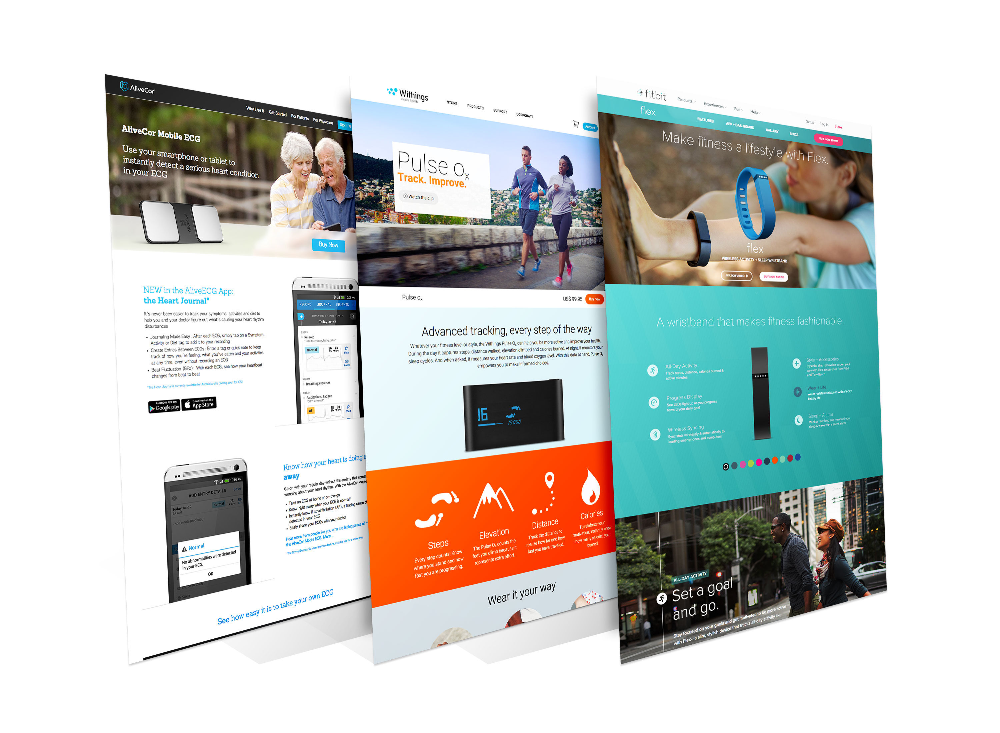
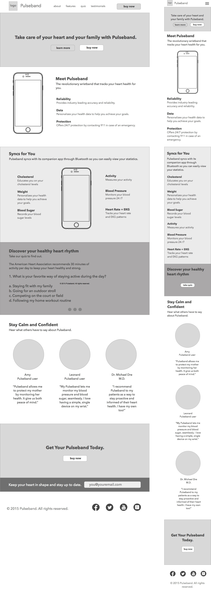
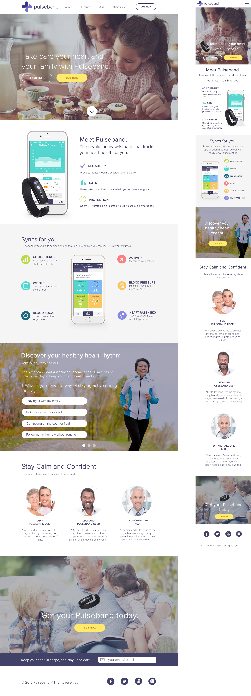

Overview
Pulseband is a three week project that I worked on as a team at DESIGNATION Labs. Pulseband is a wearable device concept that will track a user’s heart rate, blood pressure, activity, weight and among other health vitals. It is designed for those with current heart conditions and those who are at risk.
My team was required to create a companion app for the Pulseband allowing users to to easily comprehend their data through visualization and to then create a marketing webpage for the device and app. While we worked together, my main contributions we’re creating the wireframe and design for the marketing webpage.
Client
DESIGNATION LabsRole
Wireframe, UI DesignProcess
Research, User Interviews, Personas, Wireframing, High Fidelity MockupsThe Goal
Create a marketing webpage for Pulseband and it’s companion app.Research
My team created a research plan to help better empathize with our users, discover what functions our app should have, and gain an understanding about the wearable tech industry. 
Affinity Mapping
With our research we created an affinity map to organize our findings.
From our research and interviews we gathered what our competitive landscape was like for mobile health monitoring, who we were going to define as our potential users, and how we could optimize our content and features to improve the lives of our users.
Personas
Here are the personas my team made with our research findings.
Marketing Website
With our research findings I worked alongside my teammates who were working on the wireframes and design for the app and began to put together the marketing webpage.
Competitive Analysis
I began with a competitive analysis once again to see how our competitors marketed their health tracking devices, how they were branded, and what colors, typography, and iconography they used.
By evaluating our competitors we were able to make better decisions on how to wireframe and design the marketing website:
- - What content we should include on the site
- - How to market a wearable device
- - What colors not to use so we can have our own unique brand colors
- - Ideas for iconography
- - Best ways to incorporate imagery
Brainstorm
Next my team and I brainstormed ideas for the marketing page.
Wireframe
With these ideas in mind and our prior UX research to who our user base would be, I began to wireframe the marketing website using Sketch.
User Interface
I began to explore the UI by creating style tiles. We wanted our brand to be trustable which led us to use blue, however we felt the color was too cold and we did not want a red/pink call to action button because it may remind our users of danger.
This led us to our second style tile. We wanted a calming color that was also fun and decided on a deep purple that blended nicely with our accent colors. We chose to stick to a readable typeface that was not distracting and allowed easy readability.
High Fidelity Mockups
With my team agreeing on the second style tile, I proceeded to use it as a reference while designing the marketing webpage:
